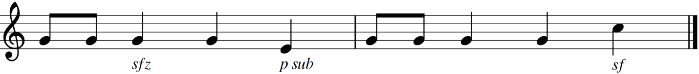
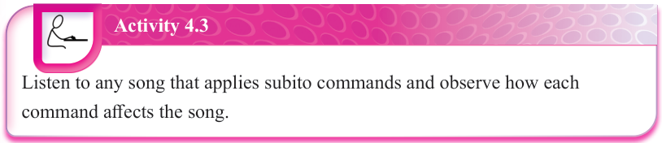
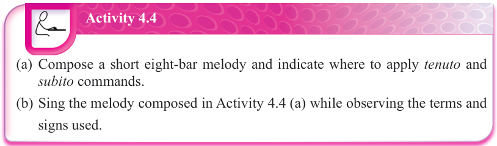
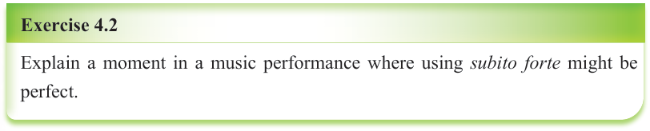

(b) Subito: This is a term that means ‘quickly or suddenly’. It is used alongside other musical commands to make their effects immediate and sudden. Some common examples of subito commands include the following:
- (i) subito forzando or sforzando (sfz), which means suddenly with force
- (ii) piano subito (p sub), which means suddenly soft
- (iii) subito forte (sf), which means suddenly loud
Figure 4.10 shows some common examples of subito commands.


Activity 4.3
Listen to any song that applies subito commands and observe how each command affects the song.

Activity 4.4
(a) Compose a short eight-bar melody and indicate where to apply tenuto and subito commands.
(b) Sing the melody composed in Activity 4.4 (a) while observing the terms and signs used.

Exercise 4.2
Explain a moment in a music performance where using subito forte might be perfect.
Terms and signs indicating repetition
When performing a piece of music, various sections may require repetition according to the music composer.
Repetition of parts of a musical piece is one of the basic principles of organising music during composition.
Various terms and signs are used to show repetition of just a section or a whole piece of music.